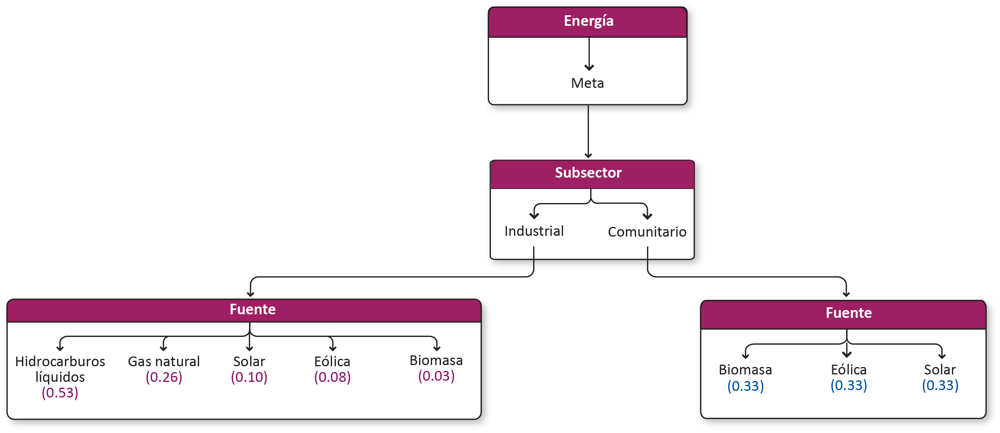

Energía¶
Meta¶
Asegurar la suficiencia energética actual, limpia y confiable. Determinar cuáles son las zonas con capacidad energética. Consolidar al Estado de Yucatán como productor de energía de una forma sostenible, producto de un desarrollo industrial ordenado con las mejores actuaciones del sector público, civil y privado. Definir criterios de uso sostenible del territorio del Estado de Yucatán con certidumbre jurídica para el desarrollo ordenado e incluyente de la industria energética para aprovechar los recursos que posee para crear un valor económico, ambiental y social.
Modelo AHP del sector energía

Subsectores¶
Energía industrial¶
Fuentes de energía a escala industrial.
Energía comunitaria¶
Fuentes de energía utilizadas en las comunidades.
Fuentes¶
Energía industrial¶
| Criterio | Definición |
|---|---|
| Hidrocarburos líquidos | Consumo y almacenamiento de hidrocarburos líquidos. Plantas que utilizan diesel o combustóleo para generar energía. Terminales de almacenamiento y reparto. |
| Gas natural | Transporte de gas natural por gasoductos y vehículos terrestres. Terminales de almacenamiento y centrales eléctricas. Uso de gas comprimido por empresas. |
| Solar | Instalaciones industriales que aprovechan la irradiación solar como fuente de energía. |
| Eólica | Instalaciones de generación de energía, mayores a 0.5 MW. |
| Biomasa | Proyectos diseñados que utilizan material biológico, para conversion en energía utilizable. Incluye los desechos de granjas porcícolas para producir energía eléctrica. |
Hidrocarburos líquidos¶
Consumo y almacenamiento de hidrocarburos líquidos. Plantas que utilizan diesel o combustóleo para generar energía. Terminales de almacenamiento y reparto.
Gas natural¶
Transporte de gas natural por gasoductos y vehículos terrestres. Terminales de almacenamiento y centrales eléctricas. Uso de gas comprimido por empresas.
Solar¶
Instalaciones industriales que aprovechan la irradiación solar como fuente de energía.
Eolica¶
Instalaciones de generación de energía, mayores a 0.5 MW.
Biomasa industrial¶
Proyectos diseñados que utilizan material biológico, para conversion en energía utilizable. Incluye los desechos de granjas porcícolas para producir energía eléctrica.
Energía comunitaria¶
| Criterio | Definición |
|---|---|
| Biomasa comunitaria | Leña, carbón vegetal |
| Eólica comunitaria | |
| Solar comunitaria |